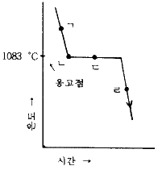
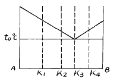
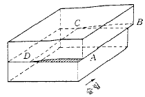
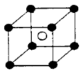
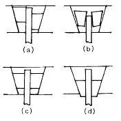

금속재료산업기사 (2004-05-23 기출문제)
1과목: 금속재료
1. 탄성구역에서의 변형은 세로방향에 연신이 생기면 가로 방향에는 수축이 생기고 각 방향의 치수변화의 비는 그 재료의 고유한 값을 나타내는 것은?
- 영률
- 탄성률
- 포아손 비
- 탄성비
(정답률: 66%)

2. 다음 중 초경 탄화물이 아닌 것은?
- WC
- GC
- TiC
- TaC
(정답률: 77%)
3. 실용금속의 결정격자 중 대표적인 것이 아닌 것은?
- 능방격자
- 면심입방격자
- 체심입방격자
- 조밀육방격자
(정답률: 87%)
4. 다이캐스팅 합금의 요구조건이 아닌 것은?
- 유동성이 나쁠 것
- 열간취성이 적을 것
- 금형에 접착되지 않을 것
- 응고수축에 대한 용탕 보급이 좋을 것
(정답률: 83%)
5. 강과 주철을 구분하는 탄소의 함유량(%)은 약 어느정도인가?
- 0.4
- 0.8
- 1.2
- 2.0
(정답률: 77%)
6. 원자로용 합금 및 신금속은?
- 우라늄, 게르마늄
- 티탄, 텅스텐
- 구리, 코발트
- 붕소, 알루미늄
(정답률: 70%)
7. 가공된 금속을 재가열할 때의 성질 및 조직변화의 순서가 맞는 것은?
- 내부응력의 제거→ 연화→ 재결정→ 결정입자의 성장
- 연화→ 내부응력의 제거→ 결정입자의 성장→ 재 결정
- 내부응력의 제거→ 재결정→ 연화→ 결정입자의 성장
- 연화→ 결정입자의 성장→ 내부응력의 제거→ 재 결정
(정답률: 53%)
8. 강의 원소 중 결정입자를 조절할 수 있고 내식성의 개선을 위해 첨가되는 원소는?
- Pb
- Cu
- Ti
- S
(정답률: 63%)
9. 탄소강이 가지는 메짐(shortness)에 대한 설명 중 옳지 않은 것은 ?
- 200-300℃에서 깨지기 쉬운 성질을 청열메짐이라고 한다.
- 황을 많이 함유할 경우 950℃ 전후에서 적열메짐이 나타난다.
- 인을 많이 함유할 경우 상온 이하의 온도에서 저온 메짐이 나타난다.
- 탄소를 함유한 경우 질화메짐이 나타난다.
(정답률: 43%)
10. 소결 전기재료의 전기 접점 부품이 갖추어야 할 성질 중 틀린 것은?
- 접촉저항이 작아야 한다.
- 고유저항이 작아야 한다.
- 열전도율이 작아야 한다.
- 비중이 작아야 한다.
(정답률: 43%)
11. 구리의 성질을 설명한 것 중 틀린 것은?
- 전기 및 열의 전도성이 우수하다.
- 전연성이 좋아 가공하기가 쉽다.
- 화학 저항력이 커서 부식에 강하다.
- Zn, Sn, Ni 등과는 합금이 잘 안된다.
(정답률: 83%)
12. 금속의 전도도에 관한 설명 중 틀린 것은?
- 물질의 전기저항은 길이에 비례 한다.
- 합금이 순금속 보다 전기전도도가 좋다.
- 열전도도가 좋은 금속은 전기전도도가 좋다.
- 고체의 열전도도는 전자와 격자진동에 의한다.
(정답률: 70%)
13. Al-Cu-Mg 계 합금으로 항공기용 신소재는?
- KSL
- ESD
- DPP
- POM
(정답률: 69%)
14. 활자합금이 갖추어야할 조건으로 틀린 것은?
- 용융점이 높을 것
- 미세부분의 주조가 가능할 것
- 적당한 강도와 내식성을 가질 것
- 가격이 쌀 것
(정답률: 65%)
15. 화이트메탈(white metal)의 주성분이 아닌 것은?
- 납(Pb)
- 주석(Sn)
- 아연(Zn)
- 철(Fe)
(정답률: 59%)
16. 반도체의 재료 중 열전 변환 재료(발열재료)의 성분으로 맞는 것은?
- MgO
- FeS
- CuO
- SiC
(정답률: 52%)
17. 면심입방격자 (FCC)의 단위격자 소속 원자수와 원자의 충전율을 바르게 짝지은 것은?
- 단위격자 소속 원자수: 4, 충전율: 74%
- 단위격자 소속 원자수: 6, 충전율: 65%
- 단위격자 소속 원자수: 3, 충전율: 82%
- 단위격자 소속 원자수: 8, 충전율: 54%
(정답률: 81%)
18. 청동의 일종인 켈밋(kelmet)이 주로 사용되는 용도는?
- 탈산제
- 피복첨가물
- 베어링
- 내화제
(정답률: 64%)
19. 다음 중 불변강에 속하지 않는 것은?
- 엘린바(Elinvar)
- 인코넬(Inconel)
- 플래티나이트(Platinite)
- 코엘린바(Coelinvar)
(정답률: 36%)
20. 다음 그림은 순구리의 냉각곡선을 나타낸 것이다. 용융 Cu 로부터 고체 Cu 의 핵이 생성되는 곳은?

- ㄱ
- ㄴ
- ㄷ
- ㄹ
(정답률: 70%)
2과목: 금속조직
21. 그림과 같은 공정형 상태도를 갖는 합금이 융액 상태로부터 냉각되어 온도 to ℃ 에 도달하였을 때 이 온도에서 공정정체 시간이 가장 긴 합금의 조성은?

- k1
- k2
- k3
- k4
(정답률: 50%)
22. 그림과 같이 순금속을 용융상태에서 부터 냉각시킬 때 용융점 보다 낮은 온도에서 응고되는 현상은?
- 재융해
- 재응고
- 과냉각
- 단결정
(정답률: 79%)
23. 그림과 같은 원자 배열의 형식은?

- 수직전위
- 나사전위
- 전단전위
- 원형전위
(정답률: 30%)
24. 격자 결함의 종류에 속하지 않는 것은?
- 공격자점(Vacancy)
- 격자간 원자(Interstitial atom)
- 전위(Dislocation)
- 확산(Diffusion)
(정답률: 52%)
25. ABC 3금속을 합금시켰을 때 이 합금의 t1온도에서 금속간 화합물(A3C)과 고용체α 가 공존하고 있었다면 이 온도에서 응축계의 자유도는?
- 0
- 1
- 2
- 3
(정답률: 33%)
26. BCC 금속의 슬립방향은?
- [111]
- [110]
- [010]
- [011]
(정답률: 56%)
27. 불활성 가스 원자의 결합형식은?
- 결정결합
- 공유결합
- 금속결합
- 구조결합
(정답률: 58%)
28. Free Cutting Brass 의 올바른 뜻은?
- 인청동
- 강인강
- 쾌삭황동
- 수인강
(정답률: 74%)
29. 냉간가공을 받은 금속이 풀림에 의하여 결정립의 모양이나 결정의 방향에 변화를 일으키지 않고 물리적 및 기계적 성질만이 변하는 현상은?
- 재결정(recrystallization)
- 쌍정(twin)
- 결정립성장(growth)
- 회복(recovery)
(정답률: 60%)
30. 금속의 소성변형을 가능하게하는 전위는 어떤 결함인가?
- 수축결함
- 선결함
- 기포결함
- 자기결함
(정답률: 75%)
31. 0.0075℃, 0.006 기압(4.58 mmHg 압력)에서 물은 어떻게 존재하는가?
- 기상,액상의 2중점
- 기상,액상의 고용 2중점
- 기상,고상의 평형상태
- 고상,액상,기상의 3중점
(정답률: 40%)
32. 자기변태점이 없는 금속은?
- Fe
- Ni
- Co
- Al
(정답률: 55%)
33. 열분석 곡선의 측정과 관련이 없는 것은?
- 열팽창
- 전해연마
- 비열
- 전기저항
(정답률: 68%)
34. 강의 마텐자이트(martensite)의 설명이 옳은 것은?
- 탄소의 확산으로 된 조직이다.
- 무확산 변태이다.
- 페라이트와 펄라이트의 혼합조직이다.
- 페라이트와 시멘타이트의 혼합조직이다.
(정답률: 80%)
35. 용융체+ α 고용체 → β 고용체의 반응식은?
- 공정반응
- 편정반응
- 포정반응
- 편석반응
(정답률: 34%)
36. 재결정과 관련된 내용의 설명 중 틀린 것은?
- 냉간가공으로 변형을 일으킨 금속을 가열하면 그 내부에 결정립의 핵이 생긴다.
- 새로운 결정립의 핵생성과 성장의 과정이다.
- 재결정이 일어나는 온도를 재결정온도라고 한다.
- 저온도의 풀림에서는 회복없이도 재결정이 일어난다.
(정답률: 63%)
37. 격자상수 a,b,c 및 α ,β ,γ 사이에 a=b≠c, α =β =γ=90° 인 결정계에 해당되는 것은?
- 입방정
- 정방정
- 사방정
- 3방정
(정답률: 57%)
38. 그림과 같은 규칙격자는 어느 형에 속하는가? (단, A : ○, B : ●)

- AB
- A2B
- AB2
- AB3
(정답률: 35%)
39. 장범위 규칙도(degree of long order)가 1인 합금은?
- 완전규칙 고용체이다.
- 완전불규칙 고용체이다.
- 불완전규칙 고용체이다.
- 불완전불규칙 고용체이다.
(정답률: 63%)
40. 열분석 장치에 직접적으로 필요한 것이 아닌 것은?
- 교반기
- 열전대
- 발열체
- 전기로
(정답률: 42%)
3과목: 금속열처리
41. 제 3과목: 금속열처리 마텐자이트의 특징으로 맞지 않는 것은?
- 무확산 변태이다
- 표면기복이 나타난다.
- 격자결함이 감소한다.
- 체심정방정 결정구조이다.
(정답률: 50%)
42. 구상흑연 주철의 열처리 목적이 아닌 것은?
- 조직의 조대화를 위해서
- 뜨임 취성을 예방하기 위해서
- 치수의 안정성을 위해서
- 강인한 조직을 위해서
(정답률: 74%)
43. 강의 열처리시 담금질성을 향상시키는 원소로 가장 적합한 것은?
- Mn
- Pb
- S
- Cu
(정답률: 74%)
44. 노말라이징의 목적이 아닌 것은?
- 조대조직의 미세화
- 탄화물의 조대화
- 내부응력의 감소
- 불균질성의 감소
(정답률: 71%)
45. 알루미늄 함금(두랄루민)을 상온 가공하려고 한다. 상온 가공전에 하여야 하는 열처리로 가장 적합한 것은?
- 퀜칭
- 노말라이징
- 어닐링
- 템퍼
(정답률: 22%)
46. 유도 전류를 이용하여 열처리제품의 필요한 표면만을 부분담금질 할 수 있는 열처리 설비는?
- 염욕로
- 연속로
- 피트로
- 고주파로
(정답률: 43%)
47. 단조용 Al 합금(두랄루민)의 열처리에 관한 설명이 틀린것은?
- 두랄루민은 담금질 열처리를 한다.
- 담금질 가열은 배치로에서 할 수 있다.
- 이 담금질을 용체화 처리라고도 한다.
- 담금질 온도는 1⑤0℃ 가 적합하다.
(정답률: 30%)
48. 강의 열처리시 뜨임의 목적이 아닌 것은?
- 담금질에 의해 강 내부에 발생한 내부응력을 제거한다.
- 적당한 인성을 부여하지 못한다.
- 조직의 불안정성을 제거한다.
- 조직 및 기계적 성질을 안정화한다.
(정답률: 76%)
49. 열처리로의 자동 온도 제어 장치가 아닌 것은?
- 온-오프(ON-OFF)식 온도 제어 장치
- 수축 열전대식 온도 제어 장치
- 비례 제어식 온도 제어 장치
- 프로그램 제어식 온도 제어 장치
(정답률: 61%)
50. 합금공구강 중 STD11의 담금질 온도(℃)로 적당한 것은?
- 1000∼1⑤0
- 800∼850
- 720∼770
- 450∼500
(정답률: 47%)
51. 기어나 스프링의 담금질시 발생되는 변형의 방지 대책이 아닌 것은?
- 프레스 담금질한다.
- 쇼트 피닝을 한다.
- 표면처리한다.
- 프레스 템퍼링한다.
(정답률: 22%)
52. 합금공구강(STD61)을 질화처리 하기 위하여 전처리 작업으로 담금질 및 뜨임을 통하여 조질처리할 때 이 재료의 중심부의 강인성을 위한 처리에 가장 좋은 조직상태는?
- 오스테나이트
- 페라이트
- 솔바이트
- 시멘타이트
(정답률: 26%)
53. 전, 후 열처리설비 중 6각 또는 8각형의 용기에 공작물, 연마제, 콤파운드를 넣고 회전시켜 상대운동으로 표면을 다듬질하는 연마법은?
- 버프연마(buffing)
- 배럴 다듬질(barrel finishing)
- 쇼트피닝(short peening)
- 액체호닝(liguid honing)
(정답률: 48%)
54. 질화처리의 특징이 아닌 것은?
- 내마모성이 좋다.
- 내식성이 나쁘다.
- 내피로성이 향상된다.
- 비교적 변형이 적다.
(정답률: 70%)
55. 유기용제를 적하하며 열분해에 의해 발생한 분위기속에서 침탄하는 것을 적하 침탄법이라고 한다. 적하침탄법의 특징이 아닌 것은?
- 변성과 침탄을 동일 노(爐)에서 할 수 있다.
- 설비가 소규모이다.
- 설비유지 등이 경제적이다.
- 한개의 노(爐)로 침탄 질화처리가 불가능하다.
(정답률: 69%)
56. 열처리 변형을 방지하는 요령의 설명 중 틀린 것은?
- 담금질 전에 가공응력을 미리 제거한다.
- 가열을 천천히 한다.
- 담금질은 열처리 변형과 관계가 없다.
- 변형이 일어날 곳은 미리 반대로 휘어놓고 담금질 한다.
(정답률: 74%)
57. 열처리할 때 국부적으로 경화되지않은 연점(soft spot)이 발생하는 가장 큰 원인은?
- 소금물을 사용할 때
- 수냉했을 때의 기포가 부착 되었을 때
- 냉각액의 양이 많을 때
- 오일의 냉각액을 사용할 때
(정답률: 71%)
58. 강의 표면경화법 중 물리적 방법에 의한 열처리법이 아닌것은?
- 침탄경화
- 고주파경화
- 화염경화
- 방전경화
(정답률: 57%)
59. 칠드주철의 칠드부 기지조직은 어떤 조직으로 만들어야 하는가?
- 페라이트
- 펄라이트
- 오스테나이트
- 마텐자이트
(정답률: 20%)
60. 모든 조건이 동일할 때 20℃에서 냉각능이 가장 낮은 것은?
- 11%식염수
- 콩기름
- 수도물
- 증류수
(정답률: 59%)
4과목: 재료시험
61. 제 4과목: 재료시험 자분탐상시험에 관한 설명 중 맞지 않는 것은?
- 표면에 존재하는 균열을 검출할 수 있다.
- 표면으로부터 1∼2mm 의 깊이에 존재하는 균열 및 결함을 검출할 수 있다.
- 비자성체 시험편의 내부 결함탐상에 적합하다.
- 핀홀같은 깊숙한 내부의 점상 결함의 검출에는 적합하지 않다.
(정답률: 77%)
62. 금속재료의 자연균열을 검사할 수 있는 화학적 검사 방법으로 가장 적합한 것은?
- 아말감법
- 크리프시험법
- 도금시험법
- 설퍼프린트법
(정답률: 38%)
63. 설퍼프린트법에 의한 황 편석 분류에서 정편석의 기호는?
- Sl
- Sc
- SN
- SD
(정답률: 50%)
64. 비틀림 시험에서 측정할 수 없는 것은?
- 비틀림강도
- 강성계수
- 포아슨비
- 비례한도
(정답률: 67%)
65. 마이크로 경도 시험 방법에 해당 되는 것은?
- 아이조드(impact)시험
- 누프(knoop)경도시험
- 항절(transverse)시험
- 에릭슨(cupping)시험
(정답률: 38%)
66. 와전류 탐상시험에서 검사코일을 형상에 따라 분류한 것이 아닌 것은?
- 매몰형 코일
- 내삽형 코일
- 관통형 코일
- 프로브형 코일
(정답률: 27%)
67. 정지상태에서 압입자를 눌러서 경도를 측정하는 경도계가 아닌 것은?
- 브리넬 경도계
- 쇼어 경도계
- 비커즈 경도계
- 로크웰 경도계
(정답률: 86%)
68. 방사선 투과시험에 사용되지 않는 것은?
- 투과도계
- 서베이메터
- 접촉매질
- 증감지
(정답률: 53%)
69. 압축시험에 의해서 결정할 수 없는 재료의 성질은?
- 노취각도
- 탄성계수
- 항복점
- 비례한도
(정답률: 58%)
70. 비파괴 시험법에 속하지 않는 것은?
- 음향방출시험(Acoustic Emission Test)
- 열적현상 이용 시험(Thermal Test)
- 스트레인 측정시험(Strain Test)
- 에릭슨 시험(Erichen Test)
(정답률: 60%)
71. 항복점이 일어나지 않는 재료는 항복점 대신 무엇을 쓰는가?
- 비례한도
- 내력
- 탄성한도
- 인장강도
(정답률: 64%)
72. 충격시험 순서 중 맨 처음 실시해야 하는 것은?
- 시험편을 앤빌 위에 고정시킨다.
- 시험기의 0점을 조정한다.
- 해머를 시험 각도(120° )α 까지 조정해 놓는다.
- 해머의 고정 핀을 푼다.
(정답률: 48%)
73. 굽힘강도 시험에서 안전 및 유의 사항이 아닌 것은?
- 지점에서의 마찰 저항을 제거해야 하는데 한지를 이용 하면 좋다.
- 시험편 길이는 규격에 맞도록 한다.
- 시험편이 접촉되는 면에는 반드시 기름칠을 해야한다.
- 시험편을 규격에 맞게 제작 해야한다.
(정답률: 84%)
74. 에릭슨시험(Erichsen test)은 무엇을 알아 보기 위한 시험인가?
- 재료의 취성을 알아보기 위해서 판재를 소결성형하여 확인한다.
- 재료의 연성을 알기 위한 시험으로 판재를 가압 성형하여 변형능력을 시험한다.
- 판재의 가단성을 알아보기 위하여 판재를 압축하여 판단한다.
- 재료의 마모성을 알아보기 위하여 판재를 구부려보는 시험을 한다.
(정답률: 66%)
75. 피로한도를 알기위해 반복횟수와 응력과의 관계를 표시한 선도는?
- TTT곡선
- S-N 곡선
- Greep 곡선
- 항온변태 곡선
(정답률: 80%)
76. 인장시험기의 시험편 물림 상태가 가장 양호한 것은?

- (a)
- (b)
- (c)
- (d)
(정답률: 62%)
77. 금속의 육안 조직검사의 설명 중 틀린 것은?
- 돋보기로 관찰할 수 있다.
- 육안으로 관찰할 수 있다.
- X선 필름으로 관찰한다.
- 표면결함 유무를 어느 정도 알 수 있다.
(정답률: 66%)
78. 표점거리가 50㎜, 두께가 2㎜, 평행부 나비가 25㎜인 강판을 인장시험 하였을 때 최대하중은 2500㎏f이었고 파단 후 늘어난 길이는 60㎜이었다. 이 재료의 인장강도(㎏f/㎜2)는?
- 30
- 40
- 50
- 60
(정답률: 47%)
79. KSB 0801의 4호 인장시험편 제작에서 지름(D)이 14 mm일 때 평행부의 길이(P)는 약 얼마(mm)로 하는가?
- 20
- 35
- 60
- 85
(정답률: 60%)
80. X-ray 회절법을 사용하는 용도로 적합한 것은?
- 압축 변형의 측정
- 결정 격자구조의 측정
- 주물의 결함 탐상
- 개재물의 탐상
(정답률: 50%)